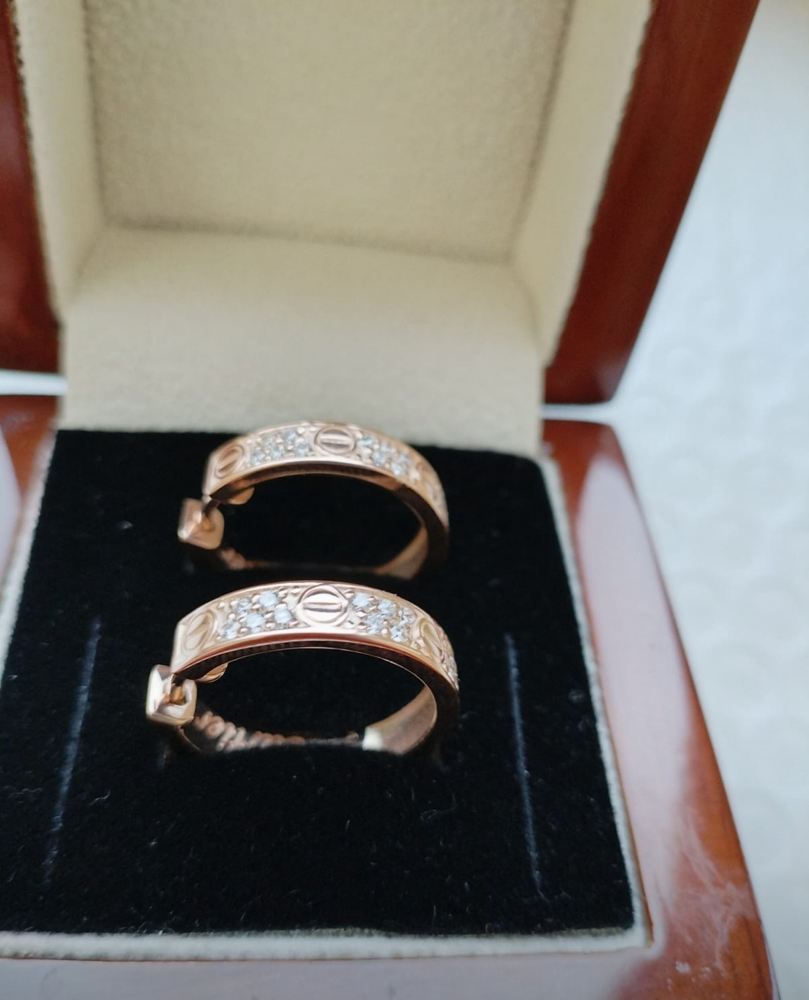
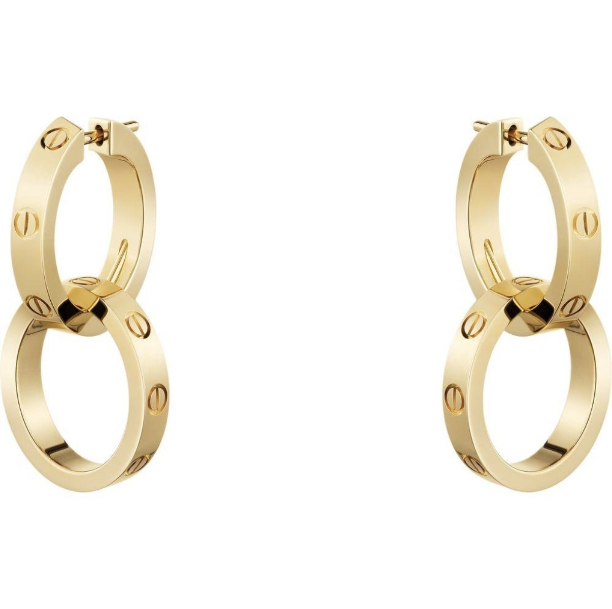

Письма семьи Картье — Юлии, основательнице дома Juliette’s
◆
31 октября 2026
Avant-propos
Вместо предисловия
◆
Дорогая Юлия,
говорят, историю нашей семьи сохранили письма. Десятилетиями братья писали друг другу из Парижа, Лондона и Нью-Йорка — о камнях, о клиентах, о сомнениях и мечтах. Спустя век правнучка Жака нашла эти письма в семейном сундуке и рассказала миру нашу историю. Вы прочли эту книгу. Теперь мы решили написать вам.
Мы знаем о вас больше, чем вы думаете. Знаем, что в 2017 году всё началось с браслетов для мам — с маленьких фигурок, на которых гравируют имя, день рождения и рост новорождённого. Знаем, что дело сначала называлось mamy-bracelets, а потом получило имя в вашу честь — Juliette’s. Знаем, что рядом с вами двое: муж, который однажды всё это затеял, и мама, Татьяна, с которой вы строите дом с первого дня.
Нам это знакомо. Дом Cartier тоже никогда не был делом одного человека. Поэтому мы пишем вам все вместе — каждый о том, что понял лучше всего.
La famille
Те, кто вам пишет
◆
Основатель и сын
LF
Луи-Франсуа
1819 — 1904
Основатель. В 1847 году принял мастерскую своего учителя в Париже.
A
Альфред
1841 — 1925
Сын. Провёл дом через войну и вырастил трёх наследников.
JT
Жанна Туссен
1887 — 1976
«Пантера». Хранительница вкуса дома с 1933 года.
Три брата — три столицы
L
Луи
1875 — 1942
Париж, рю де ла Пэ, 13. Создатель Trinity.
P
Пьер
1878 — 1964
Нью-Йорк, Пятая авеню. Смелость и рост.
J
Жак
1884 — 1941
Лондон и Индия. Камни и люди.
LF
I
О начале
Париж, улица Монторгёй, 29
Ma chère Julie,
в 1847 году мне было двадцать восемь, и у меня была одна мастерская — даже не моя, а моего учителя, которую я принял из его рук. Никаких дворцов, никаких королей. Только верстак, лупа и желание делать вещи, которые люди будут хранить.
Вы начали в 2017-м — с браслета для мамы. Я хочу, чтобы вы знали: это очень правильное начало. Великие дома рождаются не из роскоши, а из точности. Из того, что каждая вещь сделана так, будто от неё зависит репутация всей семьи. Потому что так и есть.
Мой первый совет: никогда не стесняйтесь маленького. Крошечная фигурка, на которой выгравированы рост и вес новорождённого, — не мелочь. Это первая строчка в истории чьей-то семьи. Вы делаете семейные реликвии с первого дня. Многие ювелиры идут к этому всю жизнь.
И берегите мастерскую. Всё остальное — витрины, имя, слава — вырастает из неё.
Louis-François Cartier
Fondateur · 1847
A
II
О семье
Париж, после трудных лет
Дорогая Юлия,
мне досталось непростое время: война, осада Парижа, годы, когда драгоценности никому не были нужны. Я выдержал не потому, что был умнее других, а потому что рядом была семья. Когда не на кого опереться, дом рушится. Когда есть — он переживает всё.
Я вижу, что у вас такая опора есть. Ваша мама, Татьяна, рядом с вами с первых дней. Передайте ей мой поклон: люди, которые держат дом в тишине, без витрин и аплодисментов, — его фундамент. Ни один камень не держится без оправы.
Мой совет: распределяйте роли так, как я распределил их между сыновьями. Луи творил, Пьер покорял новые земли, Жак искал камни. Каждый был силён в своём, и никто не пытался быть всем сразу. Доверяйте друг другу ту часть дела, в которой другой сильнее вас.
И хотя бы раз в год садитесь втроём за один стол — не обсуждать заказы, а вспоминать, ради чего всё начиналось.
Alfred Cartier
Le fils · le père
L
III
Об имени и форме
Париж, рю де ла Пэ, 13
Chère Madame,
когда-то я сделал кольцо из трёх колец: розового, белого и жёлтого золота. Его назвали Trinity. Три металла, три цвета — и ни одно кольцо не главнее другого. Они держатся только вместе. Мне кажется, вы поймёте эту вещь лучше, чем кто-либо: у вашего дома тоже три сердца.
Теперь об имени. Ваш муж назвал дело в вашу честь. Это не только подарок, мадам, это обязательство — приятное, но обязательство. Отныне каждое изделие с именем Juliette’s говорит от вашего лица. Пусть оно всегда говорит то, что сказали бы вы сами: честно, тепло и со вкусом.
Мой совет о форме: найдите свой почерк и упрямо ему следуйте. Мы стали Cartier, когда перестали повторять то, что делали все, и начали рисовать линии, по которым нас узнавали издалека. Пусть ваш браслет узнают с другого конца комнаты. Пусть женщина, увидевшая его на чужой руке, спросит: «Это ведь Juliette’s?»
Louis Cartier
Paris
P
IV
О смелости
Нью-Йорк, Пятая авеню, 653
Дорогая Юлия,
в 1917 году я получил особняк на Пятой авеню, не заплатив за него деньгами. Я отдал двойную нить жемчуга и сто долларов: хозяйке дома очень нравилось ожерелье, а мне очень нравился дом. Сделка века? Возможно. Но главное в ней было другое: красивая вещь стоит столько, сколько она значит для человека.
Ваши браслеты стоят не грамм серебра или золота. Они стоят ровно столько, сколько значит для матери имя её ребёнка. Не бойтесь называть настоящую цену своей работе.
И не бойтесь расти. Мне говорили, что Америка не поймёт парижский вкус. Америка поняла. Вам будут говорить, что время не то, рынок не тот, что надо подождать. Слушайте вежливо — и делайте следующий шаг. Новая коллекция, новый город, новая мастерская: мир всегда больше, чем кажется из окна вашей нынешней.
Pierre Cartier
New York
J
V
О камнях и людях
Лондон, Нью-Бонд-стрит
Ma chère Julie,
я объездил полмира — Индию, Персидский залив, Цейлон — в поисках камней. И вот что я понял: камень сам скажет, чем ему быть, если смотреть на него достаточно долго. Не торопитесь. Ищите в камне характер, а не только цену.
Я знаю, что в ваших изделиях живут камни всех видов. Изучайте их так, как изучал я. Знание камня — вот что отличает ювелира от продавца украшений.
И второе — о людях. Самые важные мои заказы начинались с разговора, а не с эскиза. Махараджа или молодая мать — каждому важно, чтобы его выслушали. Ваши клиентки приходят к вам с самой большой своей радостью — рождением ребёнка. Будьте достойны этого доверия.
Храните их истории, отзывы, фотографии. Однажды они станут вашей книгой — так же, как наши письма стали нашей.
Jacques Cartier
London
JT
VI
Вам — как женщине
Париж, 1933 — навсегда
Ma chère Julie,
мужчины этой семьи написали вам о мастерских, именах и камнях. Позвольте мне сказать о другом.
Меня называли Пантерой — не за украшения, а за характер. Луи доверил мне вкус всего дома, хотя я не умела рисовать и не была ювелиром. Я умела другое: знать, чего хочет женщина, раньше, чем она сама это поймёт. Мне кажется, у вас тот же дар — иначе ваши браслеты не носили бы как самое дорогое.
Мой совет: никому не отдавайте свой вкус. Можно поручить другим мастерскую, цифры, рекламу. Но последнее слово о том, что красиво, должно оставаться за вами. Говорите «нет» тому, что вам не нравится, даже если это хорошо продаётся. Говорите «да» тому, во что верите, даже если в это пока не верит никто.
И не забывайте украшать себя. Женщина, которая создаёт красоту для других, часто забывает о себе. Не надо.
В мой последний год в доме, в 1969-м, молодой нью-йоркский дизайнер Альдо Чипулло принёс нам браслет, который нельзя было просто снять: его закрывали маленькой золотой отвёрткой. Мы назвали его Love. Любовь, закреплённая винтом, — навсегда. С тех пор эти маленькие винты стали самым узнаваемым знаком нашего дома.
Ваши браслеты, Юлия, говорят о том же: о связи, которую не снимают. Поэтому сегодня мы передаём вам две пары серёг в духе Love.

Première · Lumière
Свет — вам как женщине
Красное золото — металл вашего дома. Бриллианты — свет, который вы приносите всем вокруг. Носите их просто так: в обычный вторник, за утренним кофе, без повода. Красота не должна ждать праздника.

Seconde · Union
Союз — вам как основательнице
Два кольца, сцепленные так, что их не разъединить. Это вы и тот, кто назвал дом вашим именем. Это вы и ваша мама. Это Juliette’s и каждая семья, которой вы служите. Надевайте их в дни, когда нужно быть сильной: на важную встречу, в день новой коллекции, в первый день в вашем бутике. Мы уверены, он будет.
С днём рождения, Джульетта.
Jeanne Toussaint
La Panthère
Les préceptes
Семь наставлений дому Juliette’s
◆
Не стесняйтесь маленького.Каждая фигурка — первая строчка в истории чьей-то семьи.
Берегите мастерскую.Витрины, имя и слава вырастают из верстака.
Доверяйте друг другу.Трое — как три кольца Trinity: никто не главнее, все держатся вместе.
Имя говорит от вашего лица.Пусть каждое изделие звучит честно, тепло и со вкусом.
Называйте настоящую цену.Вещь стоит столько, сколько она значит для человека.
Слушайте камни и людей.Лучшие заказы начинаются с разговора, а не с эскиза.
Последнее слово о красоте — за вами.И не забывайте украшать себя.
La maison Juliette’s
Ваша история продолжается
◆
Юля
Юля
2017
2017 · Начало
Мастерская
В мастерской
Мама
Юля и Татьяна
Изделия
Juliette’s
Семья
Семья
Сегодня
Сегодня
P.S.
Юля, эти письма — от людей, которые вдохновили тебя. А серьги — от того, кого вдохновляешь ты. С днём рождения.
Твой Миша
Письма — художественная стилизация по мотивам истории семьи Картье, написанная с любовью к Юлии. Архивные портреты — Wikimedia Commons, общественное достояние.
 LF
LF A
A JT
JT.jpg?width=400) L
L.jpg?width=400) P
P J
J
.jpg?width=500)
.jpg?width=500)